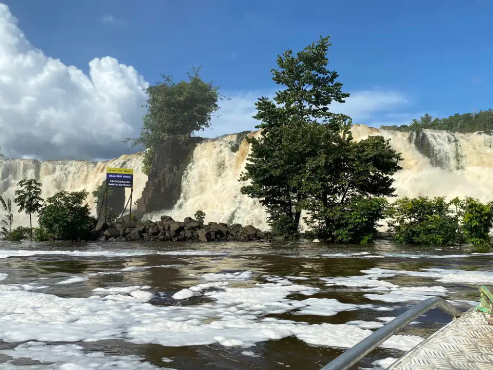

O Amapá é um estado localizado na região Norte do Brasil, conhecido por sua grande preservação ambiental e pela forte presença da Floresta Amazônica. Sua capital é Macapá, cidade famosa por ser cortada pela Linha do Equador, onde está o monumento Marco Zero do Equador. O estado possui rica biodiversidade, muitos rios e áreas de proteção ambiental. A economia do Amapá baseia-se no extrativismo, na mineração, na pesca e no comércio. Além disso, a cultura amapaense apresenta fortes influências indígenas, africanas e amazônicas, destacando-se pelas festas populares, danças e culinária típica da região Norte.

Voltar